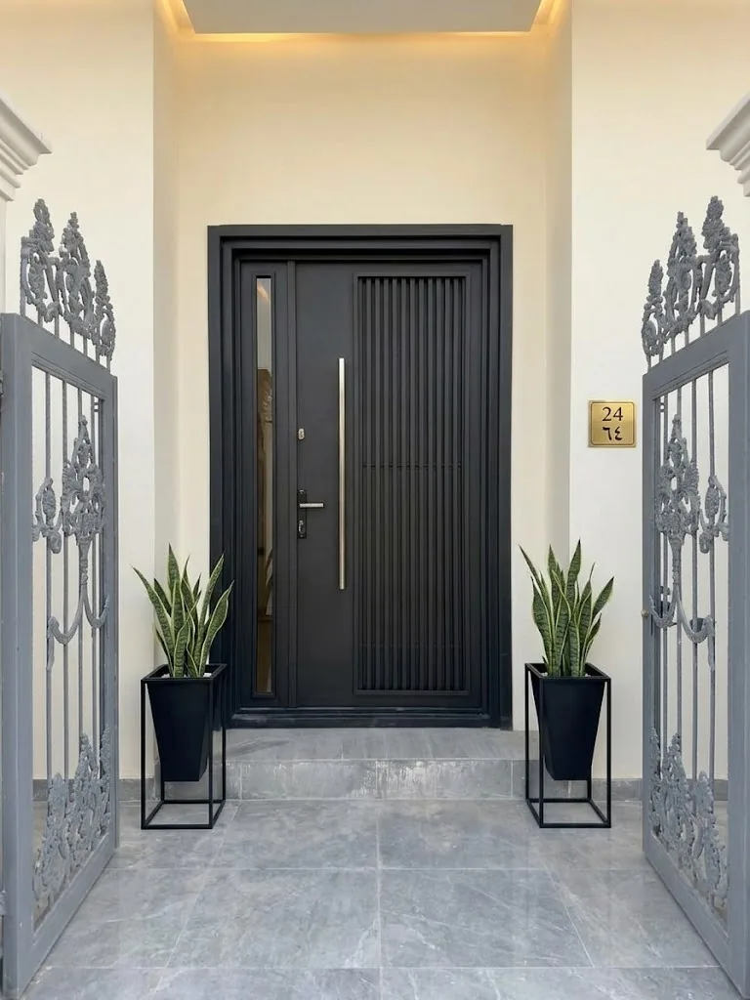
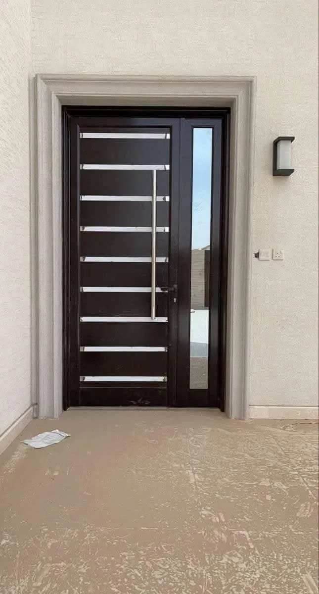
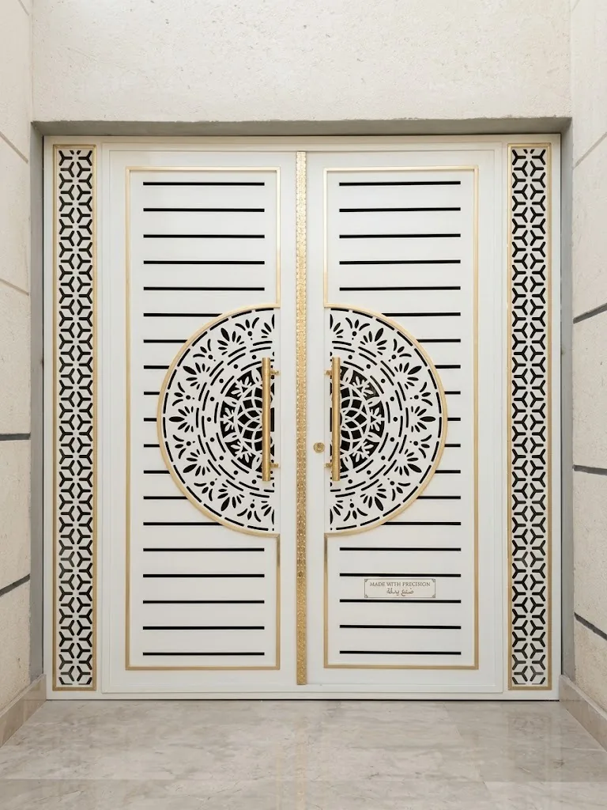
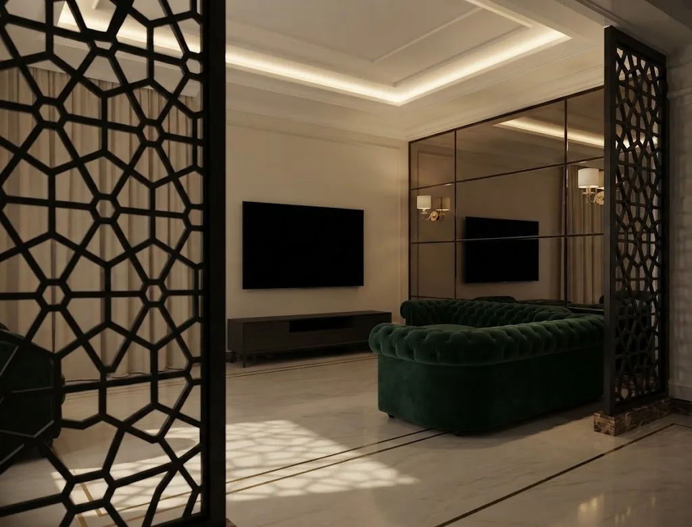

صور ووصف أولي
نراجع نوع القطعة والاستخدام والموقع والمقاسات المتاحة.
فهم الطلب أولًا
الباب الحديدي عنصر استخدام يومي وجزء واضح من واجهة المبنى. لذلك تُراجع أبعاد المدخل واتجاه الفتح ومساحة الحركة ونوع القفل والشكل المرغوب قبل اعتماد تكوين الباب.
من الفكرة إلى التثبيت
نراجع نوع القطعة والاستخدام والموقع والمقاسات المتاحة.
تُحدد الحاجة إلى زيارة الموقع ونقاط القياس والتثبيت.
يبدأ التصنيع بعد الاتفاق على التفاصيل ثم يُنسق التركيب.
معرض بصري
صور مصنفة حسب نوع العمل، من دون نسبتها إلى عميل أو موقع محدد لعدم توفر بيانات موثقة للمشروعات.



معلومات عملية
تعتمد التفاصيل النهائية على المقاس والموقع والاستخدام، لذلك تفيد الصور والقياسات الأولية عند التواصل.
أرسل صور المكان والمقاسات المتوفرة وموقع العمل في مكة أو جدة، وسنراجع المعلومات قبل توضيح الخطوة التالية.
